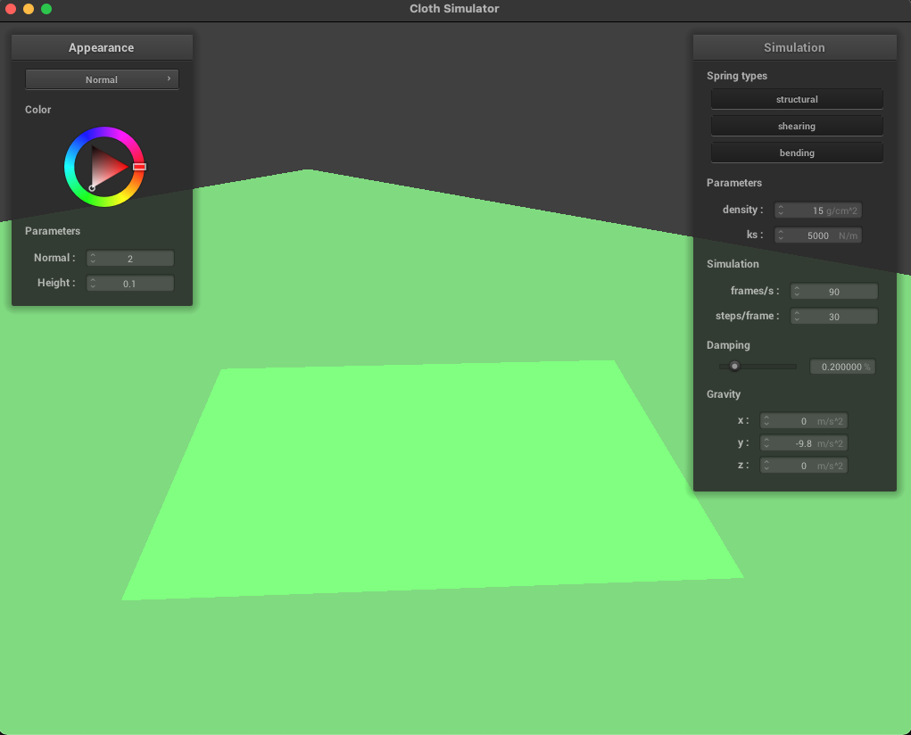

Overview
In this project, I created a very basic cloth simulation. This cloth, made up of a pointmesh and springs that connect these points in space to eachother, can be draped over objects (spheres) and planes in a realistic-looking way and (generally) doesn't clip on itself (unless the cloth's parameters are… well, we'll get to that when we get to it). It also falls the way you'd expect cloth to fall and can be pinned up in the way you'd expect cloth to… do those things. Finally, the cloth can also take on a variety of appearances thanks to the shaders created in part 5. This cloth, though simple in appearance, is powered by a lot of math (a LOT of math), which has been something of a reoccuring theme in this class. This just goes to show that if man wishes to play god in creating a small piece of digital fabric out of nothing, man better be prepared to inject a lot of rules into how that cloth will move, what it's made up of, and how it looks.
My takeaway from this assignment is that: shaders are cool and injecting physics into virtual simulations is neat, but also, I would be perfectly happy with not having to deal with any of these ever again… I'm perfectly fine with grabbing shaders off of the Unity store and Github.
Part 1: Masses and springs
Brief Overview
In this part, we set up the pointmasses and springs that would form the (literal) backbone of our cloth object. Our cloth is made up of a number of pointmasses evenly spread out in a grid over a specified area, and each of these masses are connected to one another in a sort of lattice or "x-es in boxes" pattern. These connections, which we call springs, can come in three varieties: structural, shearing, or bending springs. Here's what those relations look like:
We also had to account for if our pointmasses were pinned or not when creating them, as "pinning" the cloth is a feature we'd play around with in part 2 of this assignment. All in all, there was a lot of 1D array navigation happening in this part, with the primary problem being how we would detect and handle edge cases. My way of figuring out if we should create a spring or not was to navigate the array as if it were a 2D one, and check the point's x and y values to see if it was inside (not on an edge) or not before creating the proper springs. The bending springs could only originate from points at least 2 points into the mesh (as you can see above), so I just adjusted my if statements when creating bending springs to account for this, checking if the point's x and y values were greater than 1 (arrays start at 0).
Take some screenshots of scene/pinned2.json from a viewing angle where you can clearly see the cloth wireframe to show the structure of your point masses and springs.
Show us what the wireframe looks like (1) without any shearing constraints, (2) with only shearing constraints, and (3) with all constraints.
|
|
|
|
|
Part 2: Simulation via numerical integration
Brief Overview
"Numerical integration" means it's math time, and boy am I glad that we have computers to do all the work for us. In this part, we implemented some good ol' F = ma, Hooke's law and Verlet integration to allow our cloth to move, flap, jiggle, and clip into itself (we'll deal with that last "feature" in part 4). These equations dictate and predict how cloth in the real world works, and by adding them into our simulation, our funny grid of aesthetically pleasing lines and dots could start to trick our brains into thinking it was a tangible, clothy object beyond the no-slip thing I have under my rug at home.
Experiment with some the parameters in the simulation, and describe the effects of changing ks, density, and damping. How does altering these variables change the cloth from how it behaves with the default parameters?

|
First, here's what happens when we play around with the spring constant, ks:
ks value (ks = 1 N/m) |
ks value (ks = 1000000 N/m) |
When we increase the spring constant, the cloth becomes more stiff and doesn't want to bend as much, resisting gravity all the more thanks to its (resultingly very stiff) high spring constant. On the other hand, reducing the spring constant makes it sag more, as the cloth is pulled down more by gravity.
…As this is how physics works in real life, I don't think I need to explain this too much: this is some basic high school physics, and the results speak for themselves. High spring constant = spring is very hard to push and pull, it's not very spring-y. Low spring constant = a very malleable and spring-y spring. All thanks to Hooke's law, which we implemented, F = -kx.
Next, let's look at what happens when we mess with the cloth's density:
density = 1 g/cm) |
density = 300 g/cm) |
Physics strikes again: remember our friend, F = ma: if our mass is small, then that means the force pulling on it is less, and vice versa. Hence our low-density cloth, made of linen or something, not sagging as much as its high-density friend, made of velvet or something.
Finally, here's what happens when we mess with the damping value:
Damping = ~0.080%) |
Damping = ~0.759%) |
One element that is poorly-conveyed through static images is movement. When performing these simulations, it was obvious to see that decreasing the damping value meant that less energy was lost as the cloth moved towards its pinned, rested state. Thankfully, this is how reality works, too.
In the real world, when we apply a force to an object (ex. I push a box), the reason why objects don't just keep moving forever in a direction until we (or something) is due to forces like friction and the ilk, resulting in what we call damping. Damping is a general way to talk about energy loss, and if we decrease the damping value, that means less energy will be lost and our computerized cloth will continue to jiggle and flap around due to the energy stored within it (obtained from the force of gravity that initially "pulled" on it at the start and throughout our simulation). On the other hand, increasing the damping value means that the cloth will come to rest more quickly, as it will retain less energy. In the world of graphics, a low damping value can be useful for simulating something like a flag or other light-weight, thin, flappy, and lively cloth objects, while a high damping value can convey the appearance of something like a rug or other statically-formed, heavy, and cumbersome fabric.
Part 3: Handling collisions with other objects
Brief Overview
The next step on our journey to render a somewhat-convincing-looking piece of fabric saw us considering how we'd deal with our cloth interacting with other things. After all, while rendering a piece of fabric in a grey void is all well and good, it's not a scenario we often see in our daily lives. In this assignment, we looked at handling collisions with a plane and with a sphere, and handled these collisions by telling the cloth how to "rest" atop these objects when they collide. More specifically, we had our sphere and plane objects exert a correcting force onto whatever pointmass was lucky enough to collide with it, allowing for our mesh of dots and lines to appear as though it were draped atop the surface it had landed on.
Show us screenshots of your shaded cloth from scene/sphere.json in its final resting state on the sphere using the default ks = 5000 as well as with ks = 500 and ks = 50000. Describe the differences in the results.
Default parameters (ks = 5,000):
|
|
|
|
|
Altered ks values:
ks = 500 |
ks = 50,000 |
Like we saw in the previous part when we messed with the spring constant there, a smaller spring constant means that the fabric is a lot looser while a higher one means it's more stiff. We can tell how loose or stretchy the fabric is with how much the fabric "perks up" on the sides of the sphere: the more of the sphere we can see, and the more folds it has as a result, the "silkier" the fabric looks to be. The cloth with ks = 50,000 does not fold easily, and we can see this in how few folds there are in the fabric compared to the default and lower ks examples.
Show us a screenshot of your shaded cloth lying peacefully at rest on the plane.
|

|

|
Part 4: Handling self-collisions
Brief Overview
In this part, we worked to apply correcting forces to our cloth in an attempt to make the cloth not clip on itself. Clipping generally refers to stuff like this, wherein hair or clothes seem to pass right through objects:
|
|
|
While there can be good reason for clipping to occur in games, where processing power is already being pushed to render real-time environments at as stable and high of a framerate as possible or player-chosen attire can't be expected to play friendly with numerous armor combinations, it's less of a contention point here in our little clothsim world, wherein we try to simulate cloth physics realistically. Here, to try and make it so our cloth doesn't seem to phase through itself, us students were tasked with implementing hash_position, build_spatial_map, and self_collide. First, we hash all of the point masses positions and store them into 3D boxes sizes w,h,t, as specified on the project spec in 4.1-4.3 for easy retrieval when we inevitably have to go through our point masses to figure out which ones are colliding (or phasing through) what points.
If, when we are going through our point masses, we find another point mass that is too close to it, we calculate a correction vector to move our starting point mass in (the one we're using as a base to check all the others from), repeating for all the point masses in the fabric. As we go, we sum up these correctional vectors, and once we're done checking all the points against our one point, we average out these correctional vectors (scaling down by simulation_steps) to figure out where this point should go. In doing this, we're able to manipulate the fabric such that it shouldn't clip through itself, since the various correctional vectors will cause our fabric to go to the areas where less or no clipping will occur.
Show us at least 3 screenshots that document how your cloth falls and folds on itself, starting with an early, initial self-collision and ending with the cloth at a more restful state (even if it is still slightly bouncy on the ground).
Vary the density as well as ks and describe with words and screenshots how they affect the behavior of the cloth as it falls on itself.
|
|
|
|
|
|
|
|
|
|
|
|
A higher density results in a "heavier" cloth and the most clipping. I presume this is because though the cloth is being displaced (as seen in the mid-drop image), it's heavy enough that gravity is overwriting the correction vectors. On the other hand, the low density cloth results in the least amount of clipping by far (and actually makes it look like I did something right here), as the cloth lightly folds over itself when coming to a rest.
Increasing the spring constant results in a cloth with less folds and wrinkles, and less clipping compared to the cloth with a low spring constant. I believe this is because a lower spring constant means the cloth is less elastic, so the correction vectors aren't affecting the cloth as much as in the low spring constant render. The low spring constant cloth is a lot more rumpled and seems to be silkier than the high spring constant one, which is consistent with what we've observed in the previous parts.
…There's a lot of clipping here despite my best efforts to implement self collisions, but it is better than how the cloth looked without any self collisions, if that says anything. I'm pretty sure I screwed something up, but at this point, I do not have the time nor patience to try and correct this. At the very least, I now know even better why this is every 3D artist's nightmare in so many high budget video games.
Part 5: Shaders
Brief Overview
In this final part of the project, we students were tasked with making a number of shaders for our cloth. Ironically, none of these textures or shaders made the cloth more cloth-like… but, at the very least, our cloth can support textures to make it look like aligator leather or like a shimmering, unreal mirror-cloth-thing.
To make these shaders, I personally followed the spec to a T, while also relying on resources online (OpenGL tutorials and the like).
Explain in your own words what is a shader program and how vertex and fragment shaders work together to create lighting and material effects.
A shader program is a script that calculates the color of each pixel rendered in our scene based on the lighting in said scene and its material, or the specific shader script we're using.
A vertex shader modifies the geometry, or vertices, that make up the scene in question. Vertex shaders apply to every vertex in the scene.
Fragment shaders, on the other hand, modify what we see in the viewport, camera, or render window. Fragment shaders run on each pixel in the scene and tell us what color that pixel should be colored.
Simply put, we can think of vertex shaders as environment modifications, and fragment shaders as visual modifications.
Explain the Blinn-Phong shading model in your own words. Show a screenshot of your Blinn-Phong shader outputting only the ambient component, a screen shot only outputting the diffuse component, a screen shot only outputting the specular component, and one using the entire Blinn-Phong model.
|
|
|
|
|
|
The Blinn-Phong shading model effectively takes these three calculations: the scene with ambient light only, diffuse light only, and specular light only, and combines them to create a final image. By doing this, Blinn-Phong is able to create materials that seem "shinier" or "polished" but also not too shiny or too polished, resulting in that trademark stock 3D render effect you see everywhere (and especially in the Unity engine with its stock assets). Mathematically, there's more going on, but I am not a mathematician, so I'll try and explain what I understand.
Basically, Blinn-Phong checks the light coming into the viewpoint from the light source and determines how much light is reflected (like a mirror) versus how much is diffused (like not-a-mirror). Depending on the values we set in the shader, our objects can become very shiny or not so shiny. Here, I've used the values provided by the staff on Piazza to mimic the output seen on the project specs, but if I had wanted to, it would've been possible to create a shinier or dimmer shader, as these values would increase the threshold by which Blinn-Phong would register a light bounce as a reflection (shiny) or not (not shiny/diffuse).
Show a screenshot of your texture mapping shader using your own custom texture by modifying the textures in /textures/.
Show a screenshot of bump mapping on the cloth and on the sphere. Show a screenshot of displacement mapping on the sphere. Use the same texture for both renders. Compare the two approaches and resulting renders in your own words.
|
|
|
|
|
These two renders both attempt to render a "bumpy" texture onto our cloth: bump mapping does this by playing tricks on our eyes with how we percieve depth, while displacement mapping both uses bump mapping and physically alters the geometry of the cloth to be consistent with its texture's "bumpiness".
We can see how the cloth is less even, and does have bumps in it where the rock texture looks to be thinner in certain areas, in the displacement mapping render. This is different and distinct from the bump mapped cloth, where if you look at its silhouette, the bump mapped cloth's is the same as the Blinn-Phong and normal renders of the scene. This discrepency in the displacement mapped cloth's silhouette is, of course, a result of having to edit not just the .frag file for it, but also the .vert file that dealt with where the vertices would go as well.
NOTE: I did render the scene with -o 16 -a 16 and -o 128 -a 128, but could find no visible difference between rendering with these commands and rendering the scene without them, even with the provided 1024x1024 resolution picnic blanket texture provided. As it is getting late, I don't think it's worth the trouble of going too deeply into why nothing's happening: I need to submit lol
Show a screenshot of your mirror shader on the cloth and on the sphere.
|
|